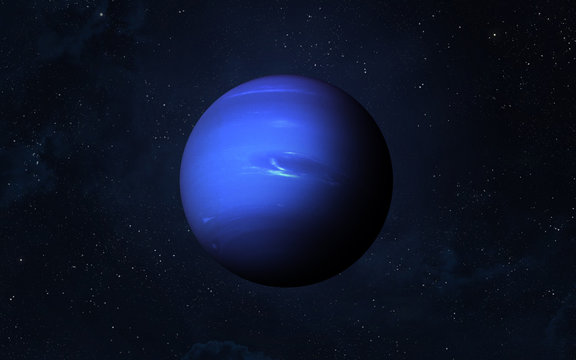
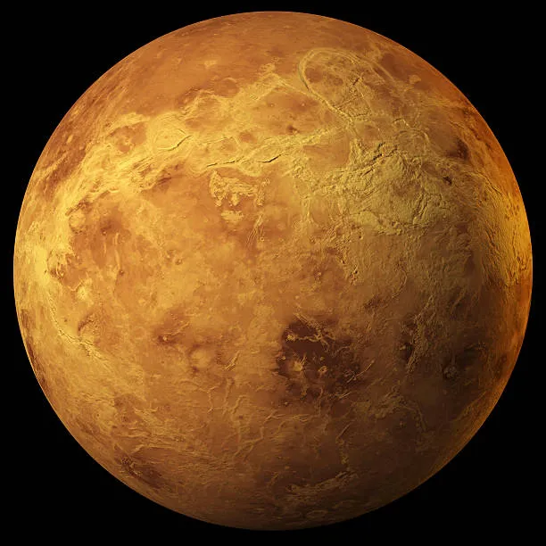
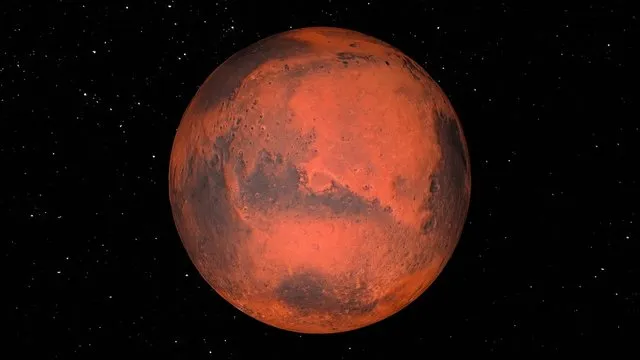
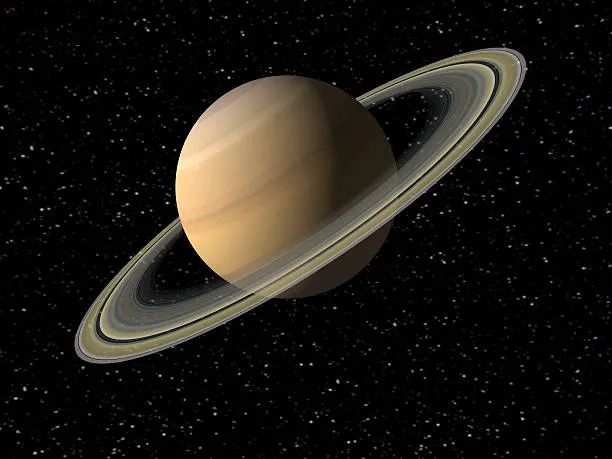

| Neptune | Venus | Mars | Saturn | |
|---|---|---|---|---|
| Images of Neptune, Venus, Mars, and Saturn! |  |  |  |  |
| Fact #1 | Neptune has a diameter of 49,529 km! | Venus has a diameter of 12,104 km! | Mars has a diameter of 6,792 km! | Saturn has a diameter of 120,536 km! |
| Fact #2 | Neptune's days last 16.1 hours! | Venus's days last for 2802.0 hours! | Mars's days last 24.7 hours! | Saturn's days last 10.7 hours! |
| Fact #3 | Neptune takes 59,800 days to revolve once around the sun! | Venus takes 224.7 days to revolve once around the sun! | Mars takes 687.0 days to revolve once around the sun! | Saturn takes 10,747 dats to revolve once around the sun! |
| Fact #4 | Neptune has 14 moons! | Venus has no moons! | Mars has 2 moons! | Saturn has 83 moons! |
| Fact #5 | The average temperature on Neptune is -200 degrees celsius! | The average temperature on Venus is 464 degrees celsius! | The average temperature on Mars is -65 degrees celsius! | The average temperature on Saturn is -140 degrees celsius! |
| Fact #6 | Neptune has a ring system! | Venus does not have a ring system! | Mars does not have a ring system! | Saturn has a ring system! |
| Fact #7 | Neptune has a global magnetic field! | Venus does not have a global magnetic field! | Mars does not have a global magnetic field! | Saturn has a global magnetic field! |